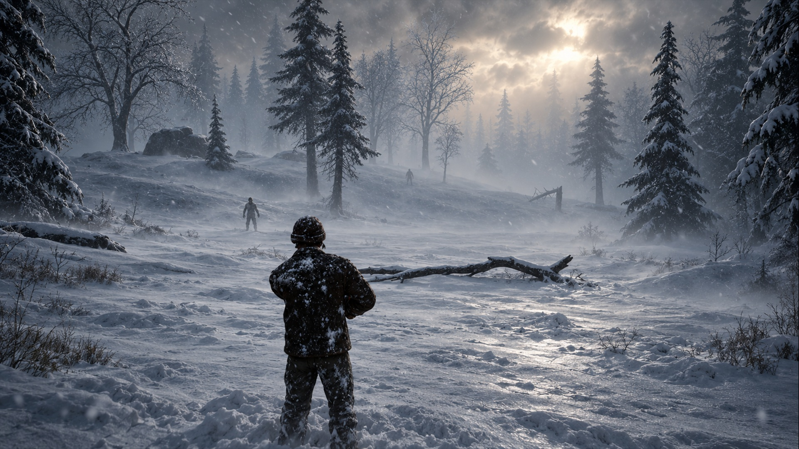
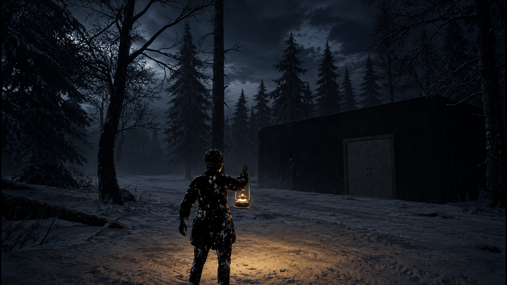
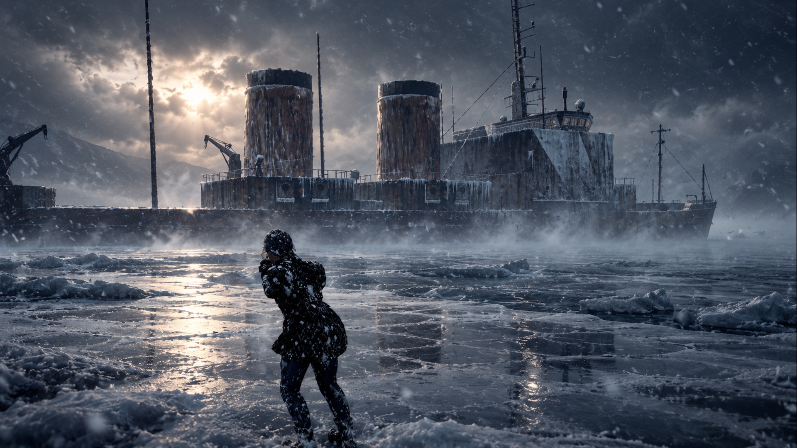

FLIGHT 217
The crash was only the beginning. Face the cold, search for supplies and survive the dangers waiting beyond the wreckage.
Explore the game ↓Stay warm.
Stay together.
Stay alive.
Flight 217 is a survival game set in a hostile, snow-covered world. Explore the aftermath of a plane crash, manage your condition and find what you need to keep going.
Venture into the wilderness alone or face it with other survivors in online co-op. Cold is not the only threat: infected enemies also roam the landscape.

Something moves
between the trees.
Snow, fog and infected enemies make every journey away from shelter a risk.
Light your way
through the night.
Find supplies and watch your condition as darkness settles over the frozen landscape.


Look beyond
the wreckage.
Explore a world shaped by ice and discover the places that may help you survive.
Follow the next chapter.
Flight 217 is in development. Store links and release information will be added here when available.
Contact the developer ↗Türkçe oyun bilgisi
Flight 217, uçak kazasının ardından karlı ve tehlikeli bir dünyada geçen bir hayatta kalma oyunudur. Soğukla mücadele et, kaynakları ara ve enfekte düşmanlara karşı tek başına veya çevrim içi arkadaşlarınla hayatta kal. Oyun geliştirme aşamasındadır.